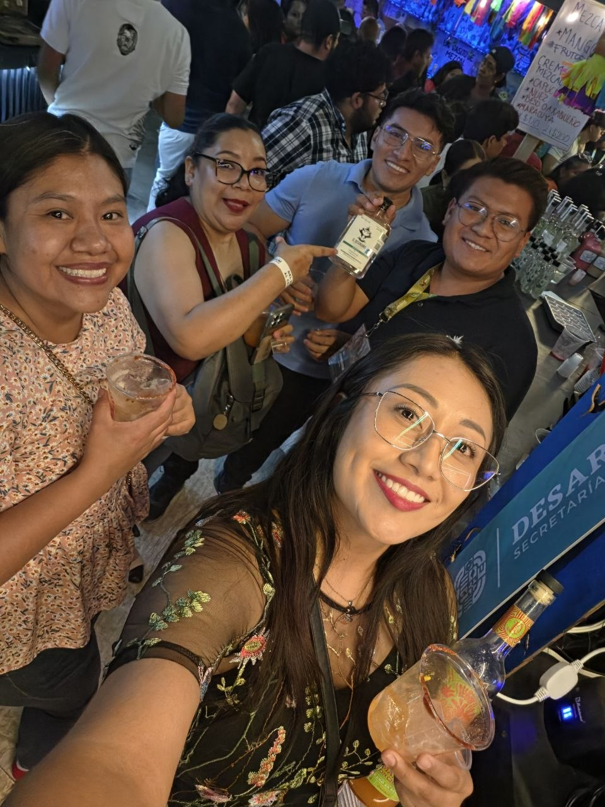
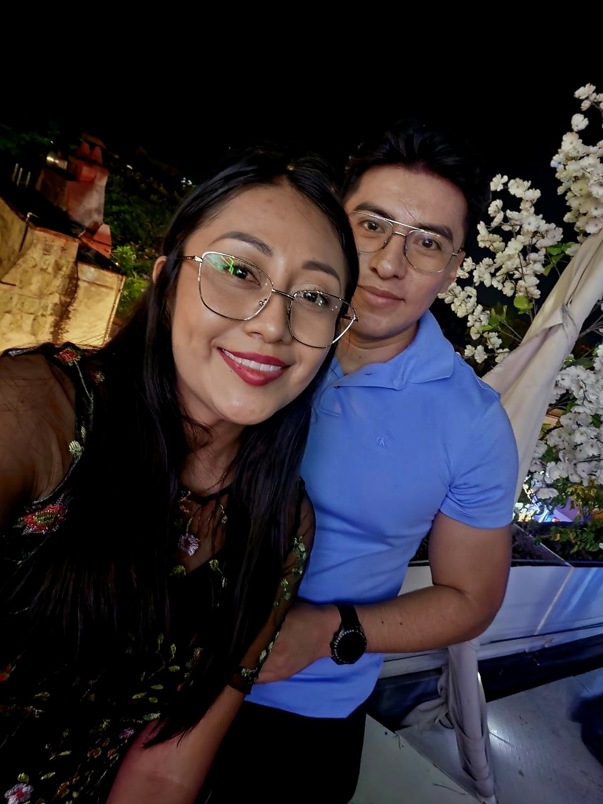
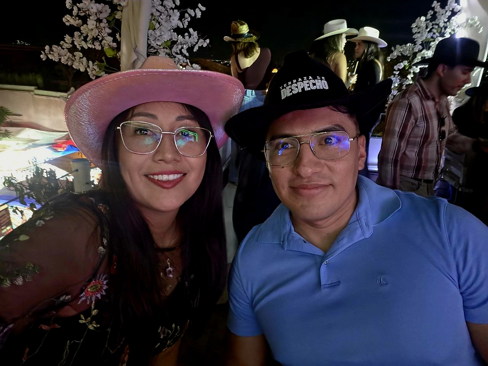
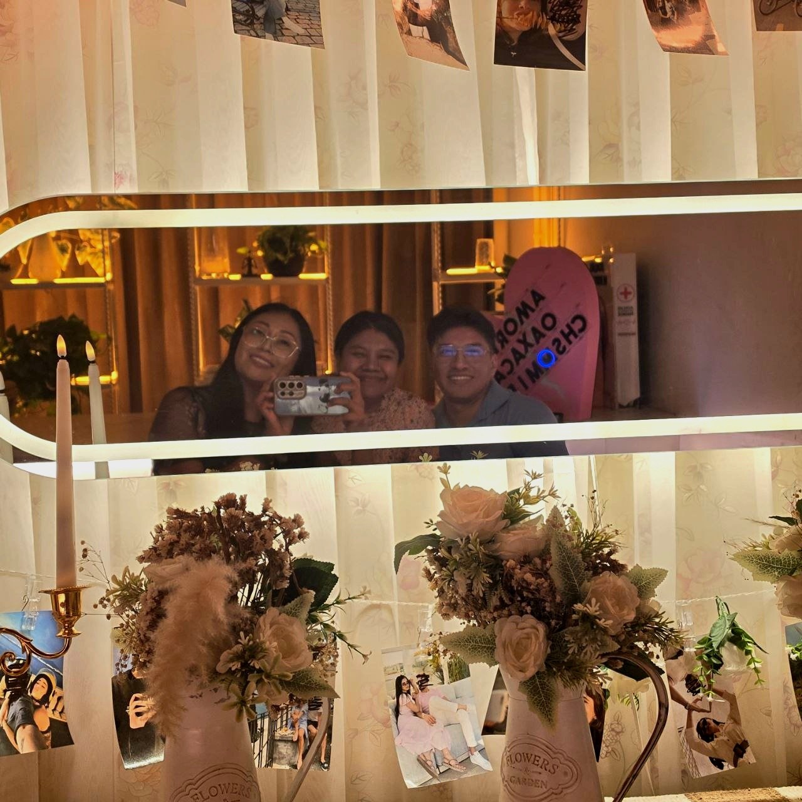

commit 0029 Date: 24 Jul 2026 🟡 Entre Mezcal y Canciones 🟢 Git Message feat: mezcal fair and karaoke night ⚪ Story 24 de julio. Ese día quedamos de ir juntos a la Feria del Mezcal aquí en Oaxaca. Pasé por tu casa y de ahí nos fuimos a la feria. Ahí nos encontramos con una de mis amigas y con una amiga de ella. Y así comenzó nuestra tarde. La feria estuvo muy padre. Recorrimos el lugar, disfrutamos el ambiente y pasamos un buen rato juntos. Yo no tomé demasiado, pero sí quedaron algunas fotografías para recordar aquella tarde. Cuando terminó la feria, tú propusiste que fuéramos a algún karaoke. Y terminamos en Despecho, una terraza que estaba muy chida. Seguimos la noche con mi amiga y con su amiga. Cantamos, platicamos y la pasamos muy padre. Después, la amiga de mi amiga se fue y nos quedamos tú, mi amiga y yo. Y esa noche tuvo un pequeño detalle nuevo: fue la primera vez que te vi medio tomado. Y también fue la primera vez que vi a mi amiga así. La noche se fue alargando hasta llegar a la madrugada. Al final, fuimos a dejar a Amada a su casa y después nos fuimos a tu casa. Tú ya estabas medio tomadito. 😂 Y así terminó nuestra noche. Bueno... en realidad no terminó ahí. Porque ya era sábado cuando nos despertamos. Me quedé un rato contigo en tu casa y por la tarde me regresé, porque tenía que ir a trabajar esa noche. Una tarde que comenzó entre mezcal, terminó entre canciones y se extendió hasta el día siguiente. Sin grandes planes. Solo una noche que se fue alargando porque la estábamos pasando demasiado bien. 🟣 Developer Notes Mezcal Fair: completed. Alcohol level: moderate. 😂 Karaoke mode: ACTIVATED. Despecho: visited. First "Manuel medio tomado" observation: UNLOCKED. Night duration: extended until Saturday. Work schedule: still operational. 🟢 Impact on Project + Feria del Mezcal documented. + Karaoke night added. + New side of Manuel discovered. + New shared experience with friends archived. + Overnight extension successfully completed. 🟢 Commit Status ✔ Completed ✔ Reviewed ✔ Ready for Release
🖼 Recuerdos

El mezcal como los besos... se piden doble.

Pa' todo mal, mezcal.

Una noche loca.

Vaqueros time.

Evidence.
1 / 5
⬅ Regresar al Commit History